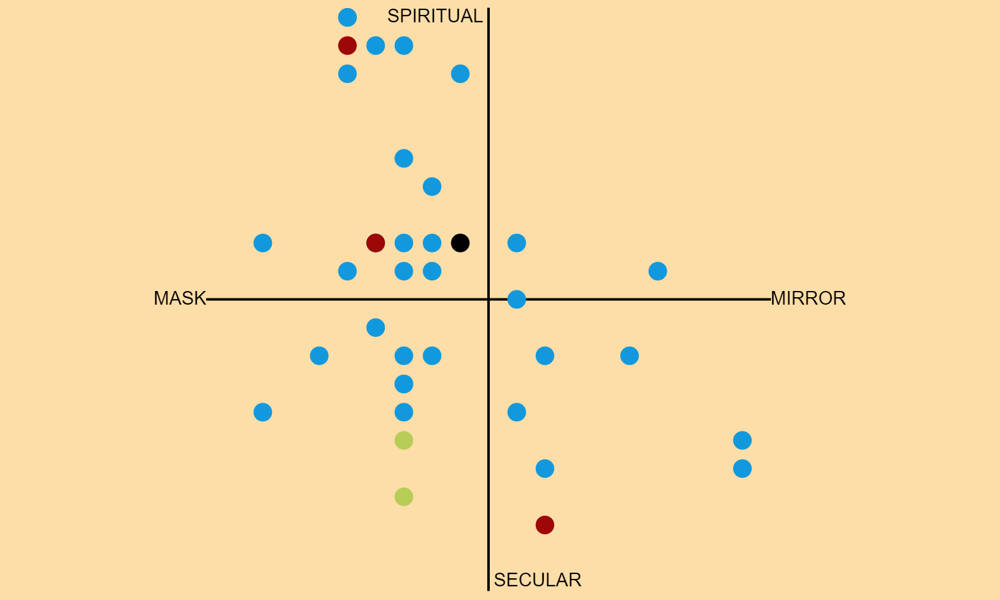
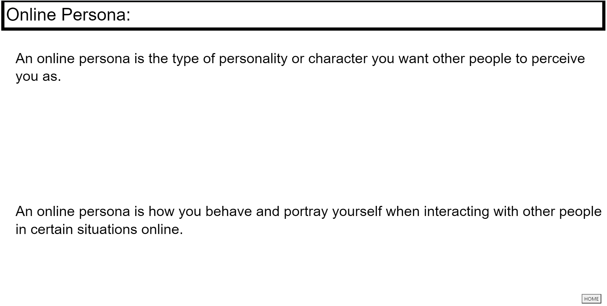
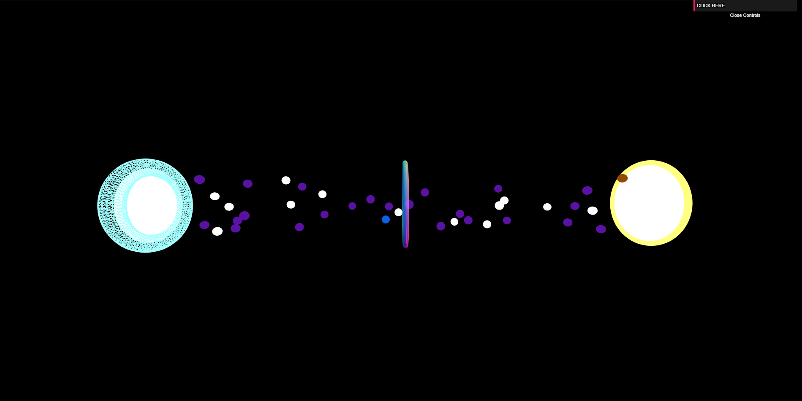

Online Persona
ReactFirebaseP5.jsthree.jsGitHubNew Art City
A project that explores how people associate with their online identities and internet personas to reveal hidden connections within the collective unconscious. The project is on display on the virtual exhibition, "Dreamscape", hosted on New Art City.
Participants complete a survey, answering various questions pertaining to their opinions and views of their online personas. Responses are stored in firebase and used to generate real-time data visualizations.
Three data visuals are made using the responses. It is recommended to take the survey first before viewing the resulting data visualization as some questions are intentionally left open-ended and abstract to prompt a response that best reflects one's interpretation of the question and purest reaction.
Participants complete a survey, answering various questions pertaining to their opinions and views of their online personas. Responses are stored in firebase and used to generate real-time data visualizations.
Three data visuals are made using the responses. It is recommended to take the survey first before viewing the resulting data visualization as some questions are intentionally left open-ended and abstract to prompt a response that best reflects one's interpretation of the question and purest reaction.

3 Data Visuals
Compass
A dot is placed on a grid-like chart for every user who has completed the survey. The dot represents every user and is placed on the chart based on their responses. Along each axis represents a pair of opposing views towards the idea of the online persona. On the X-axis is the idea of the Mask vs the Mirror where the Mask represents the online persona as another person or entity and the Mirror represents the same person or a reflection of self. On the Y-axis is the idea of the spiritual vs the secular, where the spiritual side views the online persona as something more than just a digital representation of self and the secular side views it as having no special significance. The colors of the dots are based on what age group the users are from. Youths being red, young adults are blue, middle age is green, and older age is orange.

User Defined
Personal definitions, from participants, of what is an online persona scroll down the screen. A way to truly best witness any underlying connections that we all have in viewing and defining online personas.

The Crossing
Colored spheres traverse from one side to another in a virtual environment, exiting the real world gate(the yellow circle), passing through the transition gate(the rainbow circle in the middle), and entering the online gate(the blue circle). The beginning color of the sphere is based on what gender the user identifies with in the real world and as the spheres pass the transition gate, they change color based on what genders the user identifies with when online. Male is purple, female is white, nonbinary is yellow, trans is blue, genderqueer is green, agender is orange, other is pink, and users who prefer not to answer is brown with a wireframe texture.
